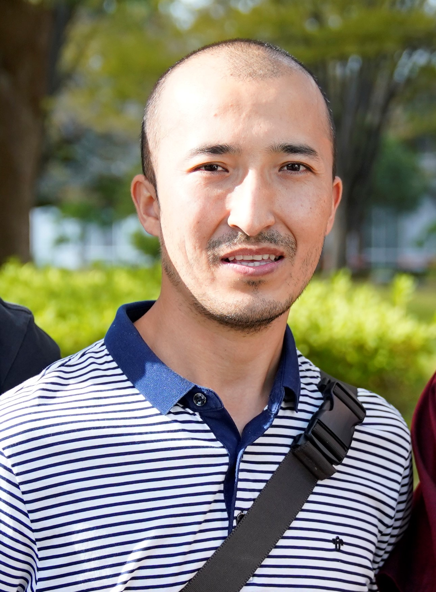

I fuse satellite radar, GNSS, LiDAR, and optical data to map how the Earth's surface moves. I'm also building the machine-learning layer that turns those measurements into scalable, physics-informed prediction.

I started in classical remote sensing: land cover classification, change detection, forest net primary productivity estimation using the CASA model, and integrating satellite imagery with weather records and field surveys into spatial databases for regional environmental policy. That foundation taught me to think across data types before I'd ever processed a SAR image.
My PhD at Chiba University, Japan pulled me into the world of radar geodesy. I applied multi-temporal InSAR to coastal land subsidence, earthquake-triggered landslides, and mining-induced deformation, and learned how much trust you have to earn before a satellite velocity field means anything. That work became a series of peer-reviewed papers and a habit of asking "what could be wrong with this number?" before presenting it as a result.
As a postdoctoral researcher at the Center for Remote Sensing, Boston University, I shifted toward natural and human-induced damage estimation, using SAR coherence and intensity to detect structural change after earthquakes and conflict at scale. The speed requirement of disaster response pushed me toward automation and reproducibility in ways that pure academic research rarely does.
At the Remote Sensing Lab, Saint Louis University, my focus shifted to accuracy: evaluating InSAR time series against GNSS and airborne LiDAR, understanding where the errors come from, and building the calibration-and-validation pipeline that makes the measurements trustworthy. Along the way I got deep into airborne LiDAR post-processing, UAV LiDAR collection and pre/post-processing, and digital twin workflows. In late 2024 I completed a data science boot camp at the Erdős Institute, which sharpened my ML skills and confirmed the direction I want to go next.
I'm now building toward a career as a Geospatial Data Scientist, fusing InSAR, GNSS, LiDAR, and optical sensors with machine learning to tackle not just ground deformation but broader Earth observation challenges: hazard forecasting, climate monitoring, precision agriculture, urban resilience. The sensors are the vocabulary; the AI layer is what lets them speak at scale.
How error enters and travels through an InSAR time series: long-wavelength correction, the limits of a single reference point, and how calibration quality decays with distance from it.
Resolving slow basin-scale ground deformation, earthquake-triggered landslides, and mining-induced subsidence, with the core challenge being to separate real signal from atmospheric noise, orbital ramps, and decorrelation.
Tying relative radar measurements to absolute ground truth with corner reflectors, GNSS, and airborne LiDAR, then stress-testing the result track by track.
Applying machine learning and deep learning to fuse InSAR, GNSS, LiDAR, and optical observations for scalable Earth monitoring, covering damage detection, hazard forecasting, and climate and land-use change at regional scale.
Fusing InSAR, GNSS, LiDAR and optical observations into data-driven Earth monitoring, spanning hazard and disaster response, climate and carbon monitoring, precision agriculture, urban and infrastructure resilience, and ecosystem and water resources.
Happy to talk InSAR, GNSS, LiDAR, vertical land motion, Digital twin, or potential collaboration. The fastest way to reach me is email.